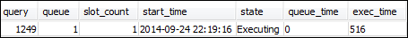

第 1 节：了解默认队列处理行为
在您开始配置手动 WLM 前，了解 Amazon Redshift 中队列处理的默认行为是很有用的。在此节中，您将创建两个从多个系统表中返回信息的数据库视图。然后，您将运行一些测试查询以了解预设情况下路由查询的方式。有关系统表的更多信息，请参阅系统表和视图参考。
步骤 1：创建 WLM_QUEUE_STATE_VW 视图
在此步骤中，您将创建一个名为 WLM_QUEUE_STATE_VW 的视图。此视图返回以下系统表中的信息。
您将在整个教程中使用此视图来监控在更改 WLM 配置后队列将发生的情况。下表描述了 WLM_QUEUE_STATE_VW 视图返回的数据。
| 列 | 描述 |
|---|---|
| queue | 与表示一个队列的行关联的编号。队列编号确定了队列在数据库中的顺序。 |
| description | 一个值，用于描述队列是仅适用于某些用户组、某些查询组还是所有类型的查询。 |
| slots | 分配给队列的槽位数量。 |
| mem | 分配给队列的内存量（以每个槽的 MB 数为单位）。 |
| max_execution_time | 在查询终止之前允许其运行的时间量。 |
| user_* | 一个值，用于指示是否允许在 WLM 配置中使用通配符来匹配用户组。 |
| query_* | 一个值，用于指示是否允许在 WLM 配置中使用通配符来匹配查询组。 |
| queued | 正在队列中等待进行处理的查询的数量。 |
| executing | 当前正在运行的查询数。 |
| executed | 已运行的查询数。 |
创建 WLM_QUEUE_STATE_VW 视图
-
打开 Amazon Redshift RSQL 并连接到您的 TICKIT 示例数据库。如果您没有此数据库，请参阅先决条件。
-
运行以下查询以创建 WLM_QUEUE_STATE_VW 视图。
create view WLM_QUEUE_STATE_VW as select (config.service_class-5) as queue , trim (class.condition) as description , config.num_query_tasks as slots , config.query_working_mem as mem , config.max_execution_time as max_time , config.user_group_wild_card as "user_*" , config.query_group_wild_card as "query_*" , state.num_queued_queries queued , state.num_executing_queries executing , state.num_executed_queries executed from STV_WLM_CLASSIFICATION_CONFIG class, STV_WLM_SERVICE_CLASS_CONFIG config, STV_WLM_SERVICE_CLASS_STATE state where class.action_service_class = config.service_class and class.action_service_class = state.service_class and config.service_class > 4 order by config.service_class; -
运行以下查询以查看该视图包含的信息。
select * from wlm_queue_state_vw;下面是示例结果。

步骤 2：创建 WLM_QUERY_STATE_VW 视图
在此步骤中，您将创建一个名为 WLM_QUERY_STATE_VW 的视图。此视图返回 STV_WLM_QUERY_STATE 系统表中的信息。
您将在整个教程中使用此视图来监控正在运行的查询。下表描述了 WLM_QUERY_STATE_VW 视图返回的数据。
| 列 | 描述 |
|---|---|
| query | 查询 ID。 |
| queue | 队列编号。 |
| slot_count | 分配给查询的槽位数量。 |
| start_time | 启动查询的时间。 |
| state | 查询的状态，如“正在执行”。 |
| queue_time | 查询已在队列中等待的微秒数。 |
| exec_time | 查询处于运行中的微秒数。 |
创建 WLM_QUERY_STATE_VW 视图
-
在 RSQL 中，运行以下查询以创建 WLM_QUERY_STATE_VW 视图。
create view WLM_QUERY_STATE_VW as select query, (service_class-5) as queue, slot_count, trim(wlm_start_time) as start_time, trim(state) as state, trim(queue_time) as queue_time, trim(exec_time) as exec_time from stv_wlm_query_state; -
运行以下查询以查看该视图包含的信息。
select * from wlm_query_state_vw;下面是示例结果。

步骤 3：运行测试查询
在此步骤中，您将在 RSQL 中通过多个连接运行查询，并查看系统表以确定路由查询以进行处理的方式。
在此步骤中，您将需要打开两个 RSQL 窗口：
-
在 RSQL 窗口 1 中，您将运行用于监控队列状态的查询和使用已在本教程中创建的视图的查询。
-
在 RSQL 窗口 2 中，您将运行长时间运行的查询以更改在 RSQL 窗口 1 中找到的结果。
运行测试查询
-
打开两个 RSQL 窗口。如果您已打开一个窗口，则只需打开另一个窗口。您可针对这两个连接使用同一用户账户。
-
在 RSQL 窗口 1 中，运行以下查询。
select * from wlm_query_state_vw;下面是示例结果。

此查询返回一个自引用结果。当前正在运行的查询是来自此视图的 SELECT 语句。对此视图的查询将始终至少返回一个结果。将此结果与在下一步中启动长时间运行的查询后产生的结果进行比较。
-
在 RSQL 窗口 2 中，从 TICKIT 示例数据库运行以下查询。此查询应会运行约一分钟时间，因此您有时间来探究之前创建的 WLM_QUEUE_STATE_VW 视图和 WLM_QUERY_STATE_VW 视图的结果。在某些情况下，您可能会发现查询运行的时长不足以查询这两个视图。在这些情况下，您可以增加
l.listid上的筛选条件值使其运行时间更长。注意
为了缩短查询执行时间并改进系统性能，Amazon Redshift 在领导节点的内存中缓存特定查询类型的结果。当启用结果缓存时，后续查询的运行速度会快得多。要阻止查询快速运行，请对当前会话禁用结果缓存。
要为当前会话禁用结果缓存，请将 enable_result_cache_for_session 参数设置为
off，如下所示。set enable_result_cache_for_session to off;在 RSQL 窗口 2 中，运行以下查询。
select avg(l.priceperticket*s.qtysold) from listing l, sales s where l.listid < 100000; -
在 RSQL 窗口 1 中，查询 WLM_QUEUE_STATE_VW 和 WLM_QUERY_STATE_VW 并将结果与之前的结果进行比较。
select * from wlm_queue_state_vw; select * from wlm_query_state_vw;以下是示例结果。


请注意，之前的查询结果与本步骤中的结果之间存在以下区别：
-
WLM_QUERY_STATE_VW 中现在有两行。一个结果是用于对此视图运行 SELECT 操作的自引用查询。第二个结果是上一步中的长时间运行的查询。
-
WLM_QUEUE_STATE_VW 中的 executing 列已从 1 增加到 2。此列条目表示队列中有两个正在运行的查询。
-
executed 列在您每次在队列中运行一个查询时将会递增。
WLM_QUEUE_STATE_VW 视图可用于全面了解队列以及每个队列中正在处理的查询的数量。WLM_QUERY_STATE_VW 视图可用于更详细地了解当前正在运行的单个查询。